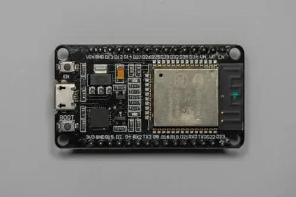
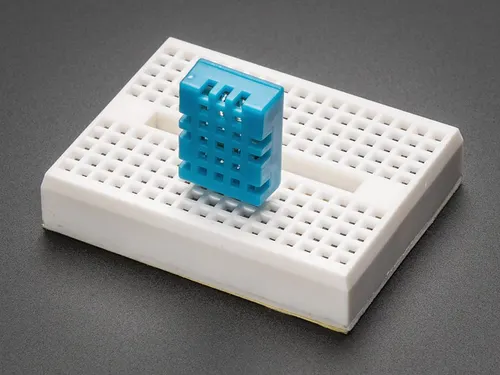
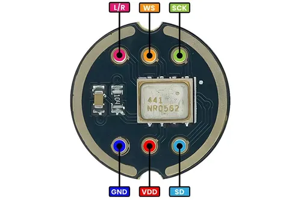
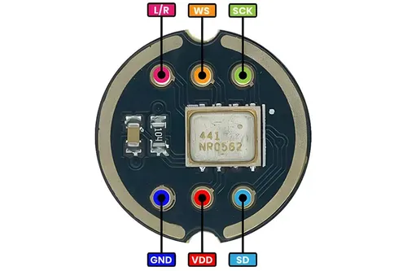
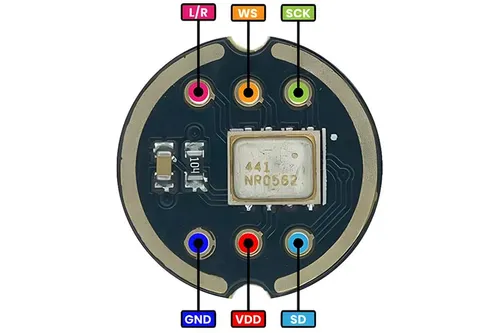
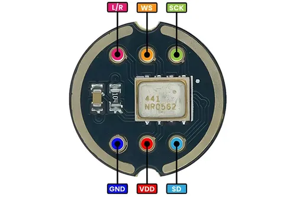

Gallery


 


The Civilian Protection Project From Wild Animals
Harnessing cutting-edge IoT technology, we deliver real-time alerts and automated protection to keep you safe from unexpected wildlife encounters. More than just a system, it’s a community-driven shield empowering civilians to live confidently alongside nature. WE WANT AS HELP AS WE CAN GET BECAUSE WITHOUT YOU THIS PROJECT IS JUST A RANDOM WEBSITE ON A RANDOM SERVER
This project aims to monitor and respond to potential wildlife threats—especially in forest border regions like Wayanad. The system utilizes multiple sensors and a Wi-Fi-enabled board to alert local communities in real-time.
The DHT11 sensor is a widely used, low-cost digital device that measures temperature and relative humidity. It combines a capacitive humidity sensor and a thermistor to produce a calibrated digital output signal.
The DHT11 sensor contains a humidity sensing component that measures the moisture content in the air by changing electrical resistance capacitively. The thermistor measures temperature by varying resistance with heat. An internal chip processes these analog signals into a digital form which is sent over a single-wire serial interface to microcontrollers.
Used in weather stations, HVAC systems, environmental monitoring, agriculture, and IoT projects requiring temperature and humidity data.
The ultrasonic sensor measures distance by emitting high-frequency sound pulses (~40kHz) and measuring the time it takes for the echo to return after bouncing off an object.
The sensor has a transmitter that emits ultrasonic waves and a receiver that listens for their reflection. The time delay between sending and receiving the pulse is used to calculate the distance based on the speed of sound (~343 m/s at room temperature).
Obstacle detection, robotics, parking sensors, level measurement, and in your case, wildlife proximity detection.
The sound sensor detects sound intensity levels in the environment by converting acoustic signals into electrical signals.
Typically uses a microphone to pick up ambient sounds, then amplifies and processes the signal to determine sound levels. The sensor outputs an analog voltage proportional to the sound intensity or a digital signal if a threshold is crossed.
Noise detection, sound level monitoring, security alarms, and your project’s use for detecting unusual wildlife sounds.
Gas and smoke sensors detect harmful gases such as carbon monoxide, methane, LPG, or smoke particles, providing early warning of fire hazards or environmental threats.
Most common gas sensors (e.g., MQ-2, MQ-5) use a heated semiconductor sensor whose resistance changes when it comes into contact with certain gases. This change in resistance is converted to an analog voltage signal proportional to gas concentration.
Fire detection, industrial safety, air quality monitoring, and detecting human interference risks in wildlife habitats.
The ESP8266/ESP32 is used to connect sensors and transmit data over Wi-Fi. It communicates with platforms like Adafruit IO or Blynk using MQTT or HTTP.
Key Notes:
Adafruit_Sensor, DHT, PubSubClient or BlynkSimpleEsp8266.Use resistors for pull-up/down logic where necessary, especially for analog sensors.
Problem: ESP8266 not connecting to Wi-Fi.
Solution: Double check SSID/password. Ensure board is close to the router. Use 2.4GHz band.
Problem: Sensors not reading values.
Solution: Check power and ground lines. Ensure pins match with the code. Add delays where needed to allow sensor response.
Problem: Data not showing on Blynk/Adafruit IO.
Solution: Confirm token/username/AIO key. Recheck feed/topic names.

Click below to download the HC-SR04 library files from our GitHub branch HCSR04:
Click below to download the DHT11 library files from GITHUB HCSR04:
Email: kdkcreate39@gmail.com